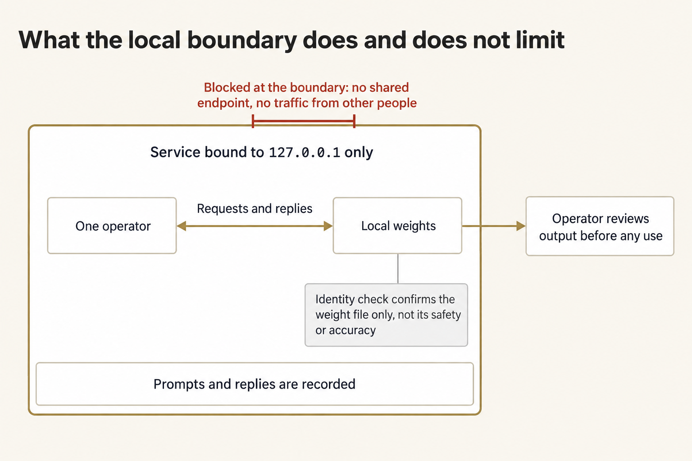
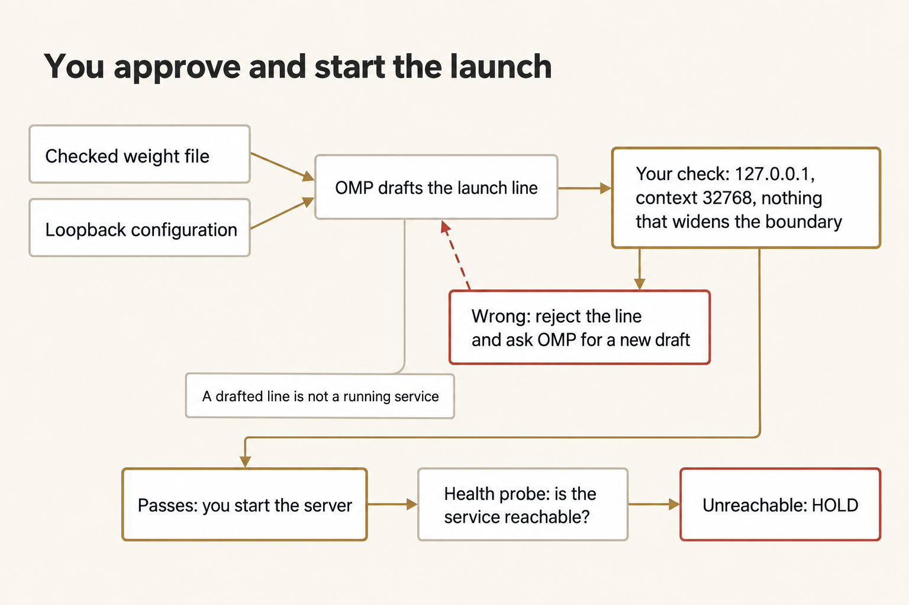
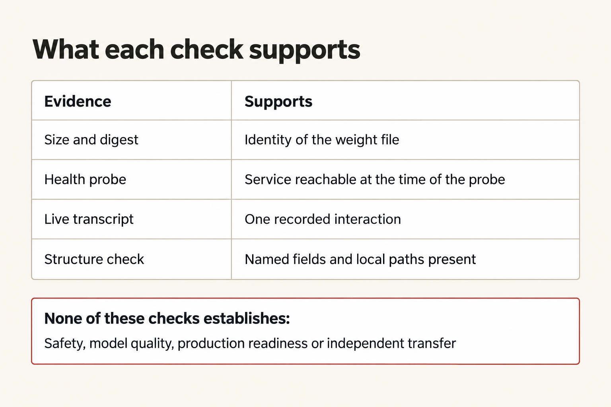
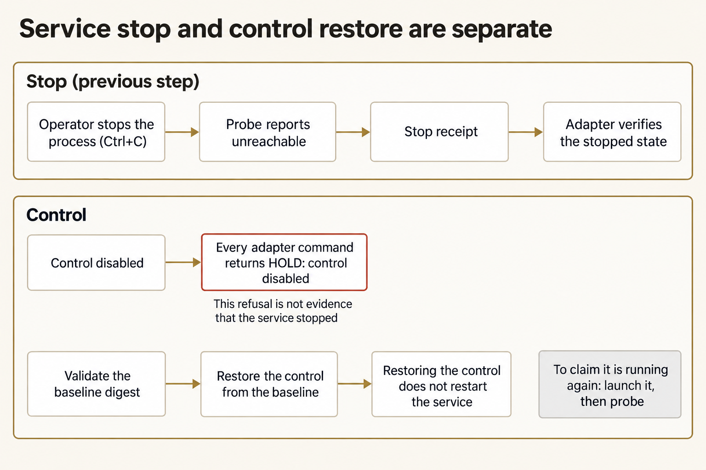

Module 10 · Stand up and package a local uncensored AI
After this assignment you can Run an uncensored model on your own laptop, stop it, bring it back, and keep the files so you can do that again without the chat.
15 steps. Mark each step done as you finish it; progress is saved on this device.
You are going to run a local model on your own laptop, get one real reply, stop it, and bring it back. Then you save the files that let you do that again, without the chat that got you here. You keep those files. You are not packaging them so someone else can take over.
The model is orcarouter/OrcaSAQ-2-Cyber-27B-Uncensored-GGUF, one file of about 15.7 GB. Uncensored means the part that used to refuse requests was removed. It will answer bluntly, and it will not warn you or decide what should go out. The server listens only on 127.0.0.1, which means only this laptop can reach it. The model file stays on this laptop. The tools record what you ask.
Plan for about three hours on Thursday. That is a rough estimate. You do this on your own, and you finish every step in this session, including shutdown. If a required step cannot finish, write the reason for HOLD and close the attempt before the session ends. HOLD means the work stopped for a named reason. It is not a grade.
On this page
Prepare separate work and copy locations
Use the checkout and Python you already checked in setup. A checkout is the local copy of the course repository. W is the work folder, where the files for this run live. E is the evidence folder, where you save what you observed. F is a fresh copy of those files, on this same laptop. The commands call that folder received package. That name is only the folder. You are not sending it to anyone. Commands work from any directory. Don't create F until you copy the files.
Terminal: Bash or zsh, ordinary user.
R="$HOME/Documents/AIHB_OCT_2026"
PY="$(for candidate in python3.12 python3 python; do "$candidate" -c 'import sys; sys.exit(1) if sys.version_info < (3, 12) else print(sys.executable)' 2>/dev/null && break; done)"
[ -n "$PY" ] || echo 'HOLD: Python 3.12 or newer is required.' >&2
M="$R/AI_Harness_Bootcamp_2/module-10-capstone"
RUN="$(date -u +%Y%m%dT%H%M%SZ)-$$"
mkdir -p "$HOME/course-evidence" && printf '%s\n' "$RUN" > "$HOME/course-evidence/module-10-run" && printf 'RUN=%s\n' "$RUN"
BASE="$HOME/course-evidence/module-10-$RUN"
W="$BASE/work"
E="$BASE/evidence"
F="$BASE/received package"
"$PY" "$R/shared/prepare_work.py" 10 "$W" &&
"$PY" -c "from pathlib import Path; import sys; e,f=map(Path,sys.argv[1:]); (f.exists() or f.is_symlink()) and sys.exit('HOLD: received destination exists'); e.mkdir(); print('EVIDENCE',e); print('FRESH DESTINATION',f)" "$E" "$F"
Terminal: PowerShell, ordinary user.
$R = "$HOME\Documents\AIHB_OCT_2026"
$PY = $(foreach ($candidate in 'python3.12','python3','python') { try { $resolved = & $candidate -c 'import sys; sys.exit(1) if sys.version_info < (3,12) else print(sys.executable)' 2>$null; if ($LASTEXITCODE -eq 0 -and $resolved) { $resolved.Trim(); break } } catch {} })
if (-not $PY) { throw 'HOLD: Python 3.12 or newer is required.' }
$M = "$R/AI_Harness_Bootcamp_2/module-10-capstone"
$RUN = [guid]::NewGuid().ToString('N')
New-Item -ItemType Directory -Force -Path "$HOME/course-evidence" | Out-Null; Set-Content -LiteralPath "$HOME/course-evidence/module-10-run" -Value $RUN; "RUN=$RUN"
$BASE = "$HOME/course-evidence/module-10-$RUN"
$W = "$BASE/work"
$E = "$BASE/evidence"
$F = "$BASE/received package"
& $PY "$R/shared/prepare_work.py" 10 "$W"
if ($LASTEXITCODE -ne 0) { throw 'Preparation held; preserve this attempt.' }
& $PY -c "from pathlib import Path; import sys; e,f=map(Path,sys.argv[1:]); (f.exists() or f.is_symlink()) and sys.exit('HOLD: received destination exists'); e.mkdir(); print('EVIDENCE',e); print('FRESH DESTINATION',f)" "$E" "$F"
Expected: The terminal prints RUN= and an identifier for this attempt. Write that identifier down. Then it prints PASS: created and the work folder's path. Ignore the printed Next suggestion. This page gives you the next command. The block then prints EVIDENCE and FRESH DESTINATION with their paths. W holds the case, the on/off control, the baseline, the package, and the scripts. E exists beside it. The folder printed after FRESH DESTINATION does not exist yet.
Stop: A destination already exists, something you need from setup is missing, or preparation fails.
Recovery: Keep the first attempt, fix what was missing, and use a new RUN. Don't reset the checkout, and don't reuse a half-prepared copy folder.
If you open a new terminal
A closed terminal forgets these names. In a new terminal, run this block to load them again for the same attempt. Don't prepare a second attempt.
Keep the approved hf and llama-server paths in your private run notes. If either tool is outside PATH, enter its full path when prompted below; spaces and apostrophes are allowed. Repeat this resolution in each new terminal. Do not replace an existing installation.
Terminal: Bash or zsh, ordinary user.
R="$HOME/Documents/AIHB_OCT_2026"
PY="$(for candidate in python3.12 python3 python; do "$candidate" -c 'import sys; sys.exit(1) if sys.version_info < (3, 12) else print(sys.executable)' 2>/dev/null && break; done)"
[ -n "$PY" ] || echo 'HOLD: Python 3.12 or newer is required.' >&2
RUN="$(cat "$HOME/course-evidence/module-10-run")"
M="$R/AI_Harness_Bootcamp_2/module-10-capstone"
BASE="$HOME/course-evidence/module-10-$RUN"
W="$BASE/work"
E="$BASE/evidence"
F="$BASE/received package"
printf '%s\n' "RUN=$RUN" "W=$W"
HF="${HF:-$(command -v hf)}"
LLAMA="${LLAMA:-$(command -v llama-server)}"
if [ -z "$HF" ]; then printf 'Approved hf executable path: '; IFS= read -r HF; fi
if [ -z "$LLAMA" ]; then printf 'Approved llama-server executable path: '; IFS= read -r LLAMA; fi
Terminal: PowerShell, ordinary user.
$R = "$HOME\Documents\AIHB_OCT_2026"
$PY = $(foreach ($candidate in 'python3.12','python3','python') { try { $resolved = & $candidate -c 'import sys; sys.exit(1) if sys.version_info < (3,12) else print(sys.executable)' 2>$null; if ($LASTEXITCODE -eq 0 -and $resolved) { $resolved.Trim(); break } } catch {} })
if (-not $PY) { throw 'HOLD: Python 3.12 or newer is required.' }
$RUN = (Get-Content -LiteralPath "$HOME/course-evidence/module-10-run" -Raw).Trim()
$M = "$R/AI_Harness_Bootcamp_2/module-10-capstone"
$BASE = "$HOME/course-evidence/module-10-$RUN"
$W = "$BASE/work"
$E = "$BASE/evidence"
$F = "$BASE/received package"
"RUN=$RUN"; "W=$W"
if (-not $HF) { $HF = (Get-Command hf -CommandType Application -ErrorAction SilentlyContinue).Source }
if (-not $LLAMA) { $LLAMA = (Get-Command llama-server -CommandType Application -ErrorAction SilentlyContinue).Source }
if (-not $HF) { $HF = Read-Host 'Approved hf executable path' }
if (-not $LLAMA) { $LLAMA = Read-Host 'Approved llama-server executable path' }
Expected: The terminal prints RUN= and the identifier you wrote down, then W= and the work folder that already exists.
Stop: The identifier is not the one you wrote down, or the folder after W= does not exist.
Recovery: A different identifier means a later attempt overwrote the saved marker. Set RUN by hand to the value you wrote down, and run the block again. A missing folder means you never prepared this attempt, so go back to the first block.
Read the boundary before the first launch
Open these files in your editor: W/shared/case/SERVICE_RULES.md, W/shared/case/model-card.json, W/shared/case/task.json, W/shared/case/hostile-note.md, and W/shared/PACKAGE.md.
In E/pre-run.md, write down the model name from the card, the file size in bytes, the license, the base model, and the address the server may use, 127.0.0.1. Say what the identity check proves and what it does not. The check proves the file matches the card. It does not prove the model is safe or accurate. Quote the community note's two suggestions, the 0.0.0.0 bind and the skipped digest check. A digest is a fingerprint of the file's bytes. Say why neither suggestion has any authority here. Name what this model will not do for you: refuse, warn, or judge.


The server only listens on this laptop. The identity check tells you the model file is the one named on the card. It does not tell you the model is safe, accurate, or ready to publish.
Figure text
The figure is titled "What the local boundary does and does not limit." The box says the service is bound to 127.0.0.1 only. Inside it, one operator exchanges requests and replies with the local weights, which are the model file, and prompts and replies are recorded. Output goes to the operator, who reviews it before any use. It does not go straight out. Two things are blocked at the boundary: no shared endpoint, and no traffic from other people. A note on the weights says the identity check confirms the weight file only, not its safety or accuracy.
Expected: Every important statement in your notes points to a file and a line. The only facts you run from are the loopback address and the model named on the card. Loopback means 127.0.0.1: only this laptop can reach the server.
Stop: A rule is unclear, you are treating the note as advice, or the boundary feels optional.
Recovery: Open SERVICE_RULES.md and the note again. The boundary does not bend, including for you.
Check local-model readiness before downloading
First, prepare your work and evidence folders if you haven't already. Those commands set PY and W, which the check below uses. If you've already prepared this attempt but opened a new terminal, reload its variables instead of preparing another attempt.
Staff provision missing tools with the device owner's approval. Run this check before logging in or downloading. It requires 35 GiB total free space before a new download, on the work/download volume and the separate HF Xet cache volume when configured. That policy already includes two model-sized allocations and a margin; it is not 35 GiB in addition to the model or a vendor minimum. The weight file is exactly 15,676,553,472 bytes.
Use the approved full executable paths when prompted if a tool is outside PATH. Keep those paths for every later command and new terminal.
The fixed command uses --local-dir weights: download metadata stays under weights/.cache/huggingface, and the unrelated Hub cache is not a weight destination. A small HF_HUB_CACHE volume does not block this route. The checker still measures the Xet cache at its configured location.
Terminal: Bash or zsh, ordinary user.
HF="${HF:-$(command -v hf)}"
LLAMA="${LLAMA:-$(command -v llama-server)}"
if [ -z "$HF" ]; then printf 'Approved hf executable path: '; IFS= read -r HF; fi
if [ -z "$LLAMA" ]; then printf 'Approved llama-server executable path: '; IFS= read -r LLAMA; fi
"$PY" "$W/scripts/check_readiness.py" --work-dir "$W" --hf "$HF" --llama-server "$LLAMA"
Terminal: PowerShell, ordinary user.
if (-not $HF) { $HF = (Get-Command hf -CommandType Application -ErrorAction SilentlyContinue).Source }
if (-not $LLAMA) { $LLAMA = (Get-Command llama-server -CommandType Application -ErrorAction SilentlyContinue).Source }
if (-not $HF) { $HF = Read-Host 'Approved hf executable path' }
if (-not $LLAMA) { $LLAMA = Read-Host 'Approved llama-server executable path' }
& $PY "$W/scripts/check_readiness.py" --work-dir "$W" --hf "$HF" --llama-server "$LLAMA"
if ($LASTEXITCODE -ne 0) { throw 'HOLD: local-model prerequisites; do not log in, download, or launch.' }
Expected: Exact paths, versions, required help flags, free bytes/GiB, total/available RAM, the pinned identity, and a free 127.0.0.1:8080. READY_FOR_REHEARSAL is not evidence that the model runs. At least 16 GiB but less than 24 GiB RAM is CONDITIONAL; 24 GiB is only a provisional planning floor. Every machine still needs a complete exact-model rehearsal with context 32768.
On Linux, MemTotal excludes memory reserved by the system. If installed capacity is unverified, get the actual installed-RAM record from the device owner and add --installed-ram-gib followed by that recorded value to both preflight commands, including the later before-launch command. Keep the inventory's source with your report; do not round MemTotal up or guess. A VM needs its assigned capacity and limits recorded separately from its host.
Stop: The checker reports HOLD, a tool differs from the approved one, or staff have not resolved a failed rehearsal on this machine.
Recovery: Keep the report and contact the device/support owner. Below 16 GiB, or after a failed full rehearsal, arrange an owner-approved qualified machine. Do not stop somebody else's server, change port 8080, lower the context, or substitute a smaller model. Observing somebody else's probe does not establish your own live operation.
Gain account access and download the pinned weights
Sign in to Hugging Face, open the model's page, and accept its conditions. The download is 15.7 GB. If it stops, you can start it again and it continues where it left off.
Terminal: Bash or zsh, ordinary user.
"$HF" auth login &&
"$HF" download orcarouter/OrcaSAQ-2-Cyber-27B-Uncensored-GGUF "OrcaSAQ-2-27B-Uncensored.gguf" --revision a0ebe1b5ad5c009cd382908585c04b7e9e0cf0c0 --local-dir "$W/weights"
Terminal: PowerShell, ordinary user.
& $HF auth login
if ($LASTEXITCODE -ne 0) { throw 'HOLD: account access; do not download.' }
& $HF download orcarouter/OrcaSAQ-2-Cyber-27B-Uncensored-GGUF "OrcaSAQ-2-27B-Uncensored.gguf" --revision a0ebe1b5ad5c009cd382908585c04b7e9e0cf0c0 --local-dir "$W/weights"
Expected: One file, OrcaSAQ-2-27B-Uncensored.gguf, at exactly 15,676,553,472 bytes when it is done. Write the account name in E/pre-run.md. Never write down a token.
Stop: You have not accepted the conditions, the download stopped, or the byte size is different.
Recovery: Preserve an incomplete download and repeat the same pinned download command after resolving access or connection problems. It resumes supported partial downloads. Do not edit the identity card, accept conditions for someone else, or continue with a wrong-size file.
Verify the pinned identity
This check compares the file you downloaded with the card. A match means you have the published file. It does not mean the model is safe, accurate, or fit for any job, and it does not look at any other file on your machine.
Terminal: Bash or zsh, ordinary user.
cd "$W" && "$PY" scripts/local_ai.py verify --model weights/OrcaSAQ-2-27B-Uncensored.gguf --control shared/controls/run.json
Terminal: PowerShell, ordinary user.
Set-Location -LiteralPath $W
& $PY scripts/local_ai.py verify --model weights/OrcaSAQ-2-27B-Uncensored.gguf --control shared/controls/run.json
Expected: PASS: pinned weight identity verified, then the identity card: model id, weight file, exact size, digest, license, and base model. The digest is the fingerprint of the file's bytes.
Stop: The script names a size or digest mismatch.
Recovery: Download the file again and check it again. Never edit model-card.json or force a pass. After this step, return to the attempt folder with cd "$BASE".
Wire OMP to the loopback service
This step writes the settings that point OMP at the server on this laptop. It does not start the server.
Terminal: Bash or zsh, ordinary user.
cd "$W" && "$PY" scripts/local_ai.py wire --port 8080 --control shared/controls/run.json --work-dir . && cd "$BASE"
Terminal: PowerShell, ordinary user.
Set-Location -LiteralPath $W
& $PY scripts/local_ai.py wire --port 8080 --control shared/controls/run.json --work-dir .
Set-Location -LiteralPath $BASE
Expected: WIRED loopback service at 127.0.0.1:8080, and two files, omp-local.yml and omp-launch.json. Those settings name no address other than 127.0.0.1. Open omp-launch.json. It records the exact OMP command for the live reply, word by word.
Stop: The script refuses the port, the output files already exist, or the control is turned off.
Recovery: The refusal tells you why. Keep the files that already exist. Never overwrite them.
Bring the service up under OMP orchestration
Open OMP in W and give it the note below. OMP drafts the start line. You check that line against the rules before you run it. A drafted line is not a running server.


OMP writes a draft of the start command. You check it against the rules, and you start the server. A separate check then asks whether the server answers.
Figure text
The figure is titled "You approve and start the launch." The checked weight file and the loopback configuration feed the box "OMP drafts the launch line." Your check is 127.0.0.1, context 32768, and nothing that widens the boundary. If the line is wrong, reject it and ask OMP for a new draft. A drafted line is not a running service. If it passes, you start the server. The health probe asks whether the service is reachable. If it is unreachable, that is HOLD.
Read shared/case/SERVICE_RULES.md, shared/case/model-card.json, and shared/case/task.json.
Draft the exact llama-server launch line for the pinned weight file: loopback bind on port 8080, context 32768, no other flags that widen the boundary. Print the line and each flag's purpose. Do not run it yourself; I approve and run it.
Check the proposed line against SERVICE_RULES.md: the host must be 127.0.0.1, the context must be 32768, and nothing else may widen the boundary. Use a terminal kept just for the server. In a new terminal, reload the attempt and executable paths under If you open a new terminal.
Repeat the tool, RAM, and free-endpoint checks immediately before starting the server. --before-launch reports current storage without requiring another 35 GiB after the verified download.
Terminal: Bash or zsh, ordinary user.
"$PY" "$W/scripts/check_readiness.py" --work-dir "$W" --hf "$HF" --llama-server "$LLAMA" --before-launch &&
"$LLAMA" -m "$W/weights/OrcaSAQ-2-27B-Uncensored.gguf" --host 127.0.0.1 --port 8080 -c 32768
Terminal: PowerShell, ordinary user.
& $PY "$W/scripts/check_readiness.py" --work-dir "$W" --hf "$HF" --llama-server "$LLAMA" --before-launch
if ($LASTEXITCODE -ne 0) { throw 'HOLD: do not start a server on this endpoint.' }
& $LLAMA -m "$W/weights/OrcaSAQ-2-27B-Uncensored.gguf" --host 127.0.0.1 --port 8080 -c 32768
Wait for this newly started process to report loading complete and listening. Record its actual process ID, executable/launch arguments, and 127.0.0.1:8080 listener in your private run evidence using the machine's process/network inspector. If they do not identify this attempt's server, hold the probe; a response from a pre-existing service proves nothing about this attempt. Record load time and other active workload rather than assuming interactive speed.
From a second terminal, reload the attempt variables and check reachability:
Terminal: Bash or zsh, ordinary user.
cd "$W" && "$PY" scripts/local_ai.py probe --port 8080 --control shared/controls/run.json && cd "$BASE"
Terminal: PowerShell, ordinary user.
Set-Location -LiteralPath $W
& $PY scripts/local_ai.py probe --port 8080 --control shared/controls/run.json
Set-Location -LiteralPath $BASE
Expected: The check prints PASS: local service reachable on loopback. Write the load time and the check result in E/pre-run.md.
Stop: The proposed line uses any address except 127.0.0.1, loading fails, or the check says the server cannot be reached.
Recovery: Reject a wrong bind before launch. Preserve a failed load and arrange an owner-approved qualified machine; do not reduce the model or context. If the server never reported listening, do not count a health response from another process.
Prove one live interaction


Each row names one check and the one thing that check can support. None of them tells you the model is safe, that its answers are good, or that someone else can run it.
Figure text
The figure is titled "What each check supports." Size and digest support the identity of the weight file. A health probe supports that the service was reachable at the time of the probe. A live transcript supports one recorded interaction. A structure check supports that the named fields and local paths are present. The red box says none of these checks establishes safety, model quality, production readiness, or independent transfer. Independent transfer would mean someone else taking these files and running the model. That is not the job. You are the one who runs it.
Run the exact command recorded in omp-launch.json.
Terminal: Bash or zsh, ordinary user.
cd "$W" && omp --model llama.cpp/OrcaSAQ-2-27B-Uncensored --config omp-local.yml --no-session --no-title --no-skills --no-rules --no-extensions --no-lsp --no-prewalk --mode json -p "Answer in one sentence: what are you?" > "$E/live-interaction.jsonl"; cd "$BASE"
Terminal: PowerShell, ordinary user.
Set-Location -LiteralPath $W
omp --model llama.cpp/OrcaSAQ-2-27B-Uncensored --config omp-local.yml --no-session --no-title --no-skills --no-rules --no-extensions --no-lsp --no-prewalk --mode json -p "Answer in one sentence: what are you?" > "$E/live-interaction.jsonl"
Set-Location -LiteralPath $BASE
Expected: The saved stream contains a real assistant reply, names llama.cpp as the provider, and reports zero provider cost. Preserve the reply as observed, including a refusal or warning; the identity card does not promise its wording.
Stop: A context-size refusal or a connection failure appears.
Recovery: Check that the server answers, then try once more. If the context is exceeded, leave the server context at the named value. Don't widen it.
Observe the uncensored behaviour
Ask the model for one deliberately blunt answer and save the actual exchange to E/observations.md. Record any refusal or warning rather than assuming it cannot occur. State what you would not put your name on and why you would not send it anywhere.
Expected: A saved exchange and the boundary you set on using its output, whether the model answered, warned, or refused.
Stop: The exchange is not saved, or your note reads like permission to use the output without a limit.
Recovery: Save the transcript first, then write the limit.
Stop the service and prove the stopped state
Stop the server with Ctrl+C in its terminal. Then prove it is stopped, and record that.
Terminal: Bash or zsh, ordinary user.
cd "$W" && "$PY" scripts/local_ai.py probe --port 8080 --control shared/controls/run.json && cd "$BASE"
Terminal: PowerShell, ordinary user.
Set-Location -LiteralPath $W
& $PY scripts/local_ai.py probe --port 8080 --control shared/controls/run.json
Set-Location -LiteralPath $BASE
Expected: The check exits 1 with HOLD: service is not reachable. The server is down.
Write a stop receipt in W that names the port and what you did.
Terminal: Bash or zsh, ordinary user.
"$PY" -c "import json; print(json.dumps({'action':'stop','port':8080,'stopped_by':'operator Ctrl+C at the server terminal'}))" > "$W/stop-receipt.json" && cat "$W/stop-receipt.json"
Terminal: PowerShell, ordinary user.
& $PY -c "from pathlib import Path; import json,sys; p=Path(sys.argv[1]); p.write_text(json.dumps({'action':'stop','port':8080,'stopped_by':'operator Ctrl+C at the server terminal'})+'\n',encoding='utf-8'); print(p.read_text(encoding='utf-8'))" "$W/stop-receipt.json"
Then confirm it.
Terminal: Bash or zsh, ordinary user.
cd "$W" && "$PY" scripts/local_ai.py stop --port 8080 --control shared/controls/run.json --receipt stop-receipt.json && cd "$BASE"
Terminal: PowerShell, ordinary user.
Set-Location -LiteralPath $W
& $PY scripts/local_ai.py stop --port 8080 --control shared/controls/run.json --receipt stop-receipt.json
Set-Location -LiteralPath $BASE
Expected: PASS: service is stopped and unreachable on loopback. Copy the receipt to E/.
Stop: The check still says the server can be reached, or the receipt does not name this port.
Recovery: Stop the server process and check again. Never record a stop that did not happen.
Disable the control and prove the refusal
Turn the active control off, try each check command, then put the control back from the saved baseline. The baseline is the known-good copy of that on/off file.


You stop the server. The check script only confirms that it stopped. Putting the on/off switch back does not start the server again.
Figure text
The figure is titled "Service stop and control restore are separate." In the stop row, the operator stops the process with Ctrl+C, the probe reports unreachable, you write a stop receipt, and the adapter verifies the stopped state. In the control row, a disabled control makes every adapter command return HOLD: control disabled. That refusal is not evidence that the service stopped. Separately, you validate the baseline digest and restore the control from the baseline. Restoring the control does not restart the service. To claim it is running again, launch it, then probe.
Terminal: Bash or zsh, ordinary user.
(
"$PY" -c "from pathlib import Path; import json,sys; Path(sys.argv[1]).write_text(json.dumps({'enabled': False})+'\n',encoding='utf-8')" "$W/shared/controls/run.json" && cd "$W" || exit 1
"$PY" scripts/local_ai.py verify --model weights/OrcaSAQ-2-27B-Uncensored.gguf --control shared/controls/run.json
"$PY" scripts/local_ai.py wire --port 8080 --control shared/controls/run.json --work-dir .
"$PY" scripts/local_ai.py probe --port 8080 --control shared/controls/run.json
"$PY" scripts/local_ai.py stop --port 8080 --control shared/controls/run.json --receipt stop-receipt.json
)
Terminal: PowerShell, ordinary user.
& $PY -c "from pathlib import Path; import json,sys; Path(sys.argv[1]).write_text(json.dumps({'enabled': False})+'\n',encoding='utf-8')" "$W/shared/controls/run.json"
if ($LASTEXITCODE -ne 0) { throw 'HOLD: control was not disabled.' }
Set-Location -LiteralPath $W
& $PY scripts/local_ai.py verify --model weights/OrcaSAQ-2-27B-Uncensored.gguf --control shared/controls/run.json
& $PY scripts/local_ai.py wire --port 8080 --control shared/controls/run.json --work-dir .
& $PY scripts/local_ai.py probe --port 8080 --control shared/controls/run.json
& $PY scripts/local_ai.py stop --port 8080 --control shared/controls/run.json --receipt stop-receipt.json
Set-Location -LiteralPath $BASE
Expected: HOLD: control disabled and exit 1 for every check command. No command acts while the control is off.
Put the control back by running the package's own restore commands again. Then confirm the wire files are unchanged before you go on.
Stop: Any check command acts while the control is off, or the baseline fingerprint fails.
Recovery: Keep the refusal as evidence. Restore only from the validated baseline.
Freeze the declared bundle before copying
Keep only the eleven files the package declares. Don't add the weights, evidence, repository, private material, or chat history. Record each file's digest in E outside W:
Terminal: Bash or zsh, ordinary user.
"$PY" - "$W" "$E" <<'PY'
from pathlib import Path
import hashlib, json, sys
w,e = map(Path,sys.argv[1:])
names = ['shared/PACKAGE.md','scripts/local_ai.py','scripts/check_package.py','scripts/check_readiness.py','shared/case/model-card.json','shared/case/SERVICE_RULES.md','shared/case/task.json','shared/case/hostile-note.md','shared/controls/run.json','shared/baseline/run.json','shared/baseline/run.json.sha256']
files = {name:hashlib.sha256((w/name).read_bytes()).hexdigest() for name in names}
record = {'files':files,'stop_receipt_sha256':hashlib.sha256((w/'stop-receipt.json').read_bytes()).hexdigest()}
with (e/'bundle-before.json').open('x',encoding='utf-8') as output:
json.dump(record,output,indent=2,sort_keys=True)
print('FROZEN BUNDLE',len(files),'files')
PY
Terminal: PowerShell, ordinary user.
@'
from pathlib import Path
import hashlib, json, sys
w,e = map(Path,sys.argv[1:])
names = ['shared/PACKAGE.md','scripts/local_ai.py','scripts/check_package.py','scripts/check_readiness.py','shared/case/model-card.json','shared/case/SERVICE_RULES.md','shared/case/task.json','shared/case/hostile-note.md','shared/controls/run.json','shared/baseline/run.json','shared/baseline/run.json.sha256']
files = {name:hashlib.sha256((w/name).read_bytes()).hexdigest() for name in names}
record = {'files':files,'stop_receipt_sha256':hashlib.sha256((w/'stop-receipt.json').read_bytes()).hexdigest()}
with (e/'bundle-before.json').open('x',encoding='utf-8') as output:
json.dump(record,output,indent=2,sort_keys=True)
print('FROZEN BUNDLE',len(files),'files')
'@ | & $PY - "$W" "$E"
Expected: FROZEN BUNDLE 11 files, and a new record, E/bundle-before.json, with eleven path/digest pairs and the stop receipt's digest.
Stop: A file is missing, a record already exists, or the set differs from the files the package names.
Recovery: Correct the set and freeze again into a new record. Never overwrite the old one.
Copy only the frozen members
Leave the model file where it is, on this laptop. The final check, from a new terminal, uses only the copied files. It does not download the model again, and it does not start the server. Copy the files and check each fingerprint against E/bundle-before.json.
Terminal: Bash or zsh, ordinary user.
"$PY" - "$W" "$F" "$E/bundle-before.json" <<'PY'
from pathlib import Path
import hashlib, json, shutil, sys
w,f,record_path = map(Path,sys.argv[1:])
w = w.resolve()
record = json.loads(record_path.read_text())
if f.exists() or f.is_symlink() or f.resolve().is_relative_to(w):
raise SystemExit('HOLD: received destination exists or overlaps work')
for name,digest in record['files'].items():
source = w/Path(name)
if not source.resolve().is_relative_to(w):
raise SystemExit('HOLD: escaping bundle path: '+name)
if hashlib.sha256(source.read_bytes()).hexdigest()!=digest:
raise SystemExit('HOLD: frozen source changed: '+name)
f.mkdir(parents=True,exist_ok=False)
for name,digest in record['files'].items():
target = f/name
target.parent.mkdir(parents=True,exist_ok=True)
shutil.copyfile(w/name,target)
if hashlib.sha256(target.read_bytes()).hexdigest()!=digest:
raise SystemExit('HOLD: copied bytes differ: '+name)
print('FRESH PACKAGE',f.resolve())
print('NO WEIGHTS COPIED')
PY
Terminal: PowerShell, ordinary user.
@'
from pathlib import Path
import hashlib, json, shutil, sys
w,f,record_path = map(Path,sys.argv[1:])
w = w.resolve()
record = json.loads(record_path.read_text())
if f.exists() or f.is_symlink() or f.resolve().is_relative_to(w):
raise SystemExit('HOLD: received destination exists or overlaps work')
for name,digest in record['files'].items():
source = w/Path(name)
if not source.resolve().is_relative_to(w):
raise SystemExit('HOLD: escaping bundle path: '+name)
if hashlib.sha256(source.read_bytes()).hexdigest()!=digest:
raise SystemExit('HOLD: frozen source changed: '+name)
f.mkdir(parents=True,exist_ok=False)
for name,digest in record['files'].items():
target = f/name
target.parent.mkdir(parents=True,exist_ok=True)
shutil.copyfile(w/name,target)
if hashlib.sha256(target.read_bytes()).hexdigest()!=digest:
raise SystemExit('HOLD: copied bytes differ: '+name)
print('FRESH PACKAGE',f.resolve())
print('NO WEIGHTS COPIED')
'@ | & $PY - "$W" "$F" "$E/bundle-before.json"
Expected: FRESH PACKAGE and the destination path, then NO WEIGHTS COPIED. The destination holds only the named files. The model file is left out on purpose.
Stop: The destination already exists, a frozen file changed, or the model file was copied.
Recovery: Keep the failed folder, and use a new destination for the corrected copy.
Check the fresh copy from a new terminal
Open a new terminal and run the block under If you open a new terminal. Then check the copy using only its own files. The check reads the package's named sections and confirms that every file it names is inside the fresh copy folder. It does not run the package's commands. This tells you the files you saved are the files you named. It does not start the model, and it does not hand the model to anyone else. You are the one who runs it.
Terminal: Bash or zsh, ordinary user.
cd "$F" && "$PY" scripts/check_package.py shared/PACKAGE.md; cd "$BASE"
Terminal: PowerShell, ordinary user.
Set-Location -LiteralPath $F
& $PY scripts/check_package.py shared/PACKAGE.md
Set-Location -LiteralPath $BASE
Expected: PASS: package structure checked.
Stop: A HOLD: line names a missing section or a file the fresh copy folder does not hold.
Recovery: Keep the failed copy. Fix the package in W, then freeze it into a new record and copy it to a new destination.
Close the session
In E/close-out.md, write down the verified identity, the live reply, the stop receipt, the restore comparison, and the fresh copy check. Say plainly which parts ran, which did not, and what the checks do not show. Then shut the server down if it is still running, and keep the evidence folder.